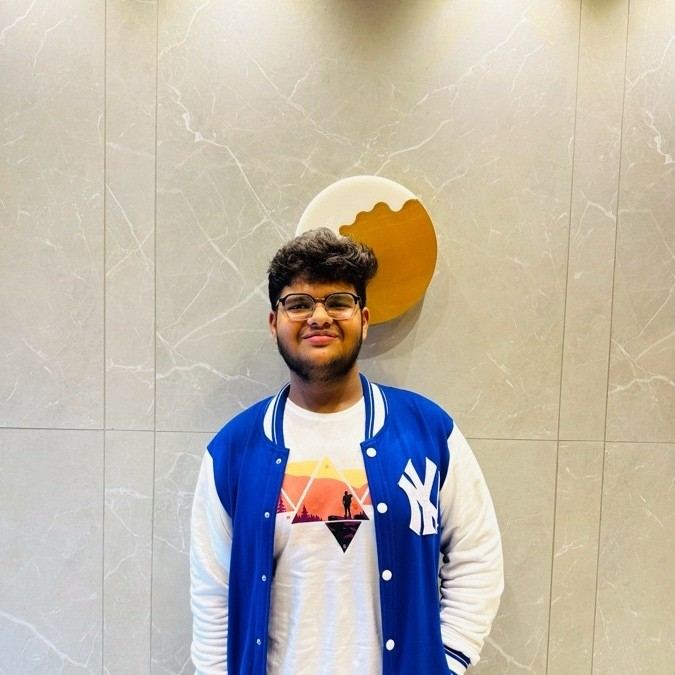

Production AI
I design AI workflows around validation, latency, and predictable outputs.
AI systems | ML infrastructure | Production engineering
Building production-ready AI systems and scalable ML applications.

About
I am an aspiring AI/ML Engineer focused on turning models into reliable, production-ready systems. I work with RAG applications, FastAPI services, LangChain and LlamaIndex pipelines, and applied ML using TensorFlow, PyTorch, and Scikit-Learn.
I care about scalable AI infrastructure, robust evaluation, and deployment workflows that make ML systems faster, safer, and easier to operate. I have also led a 7-member development team, balancing technical execution with coordination and product delivery.
I design AI workflows around validation, latency, and predictable outputs.
I build retrieval and prompt pipelines using LangChain, LlamaIndex, and FastAPI.
I lead with ownership, clear communication, and measurable engineering outcomes.
Skills
Experience
Machine Learning Intern
Projects
I lead development of an AI-driven examination platform for generating questions, MCQs, rubrics, and evaluating answers through text and speech-based assessment flows.
I built a production-grade fraud detection system with threshold optimization, low-latency inference, experiment tracking, and repeatable deployment workflows.
I am building an AI-powered GitHub repository RAG system for asking natural-language questions over codebases with grounded answers and file, function, and line-level attribution.
Certifications
I completed this Skills4Future foundation course at Vishwakarma Govt. Engineering College GKS, covering the intersection of sustainable technology, green skills, and AI applications.
I completed IBM SkillsBuild training focused on foundational AI concepts, real-world use cases, and responsible adoption of artificial intelligence.
Education
VGEC (GTU)
CGPA: 8.66Contact
Open to AI/ML internships, applied ML roles, and startup engineering opportunities.